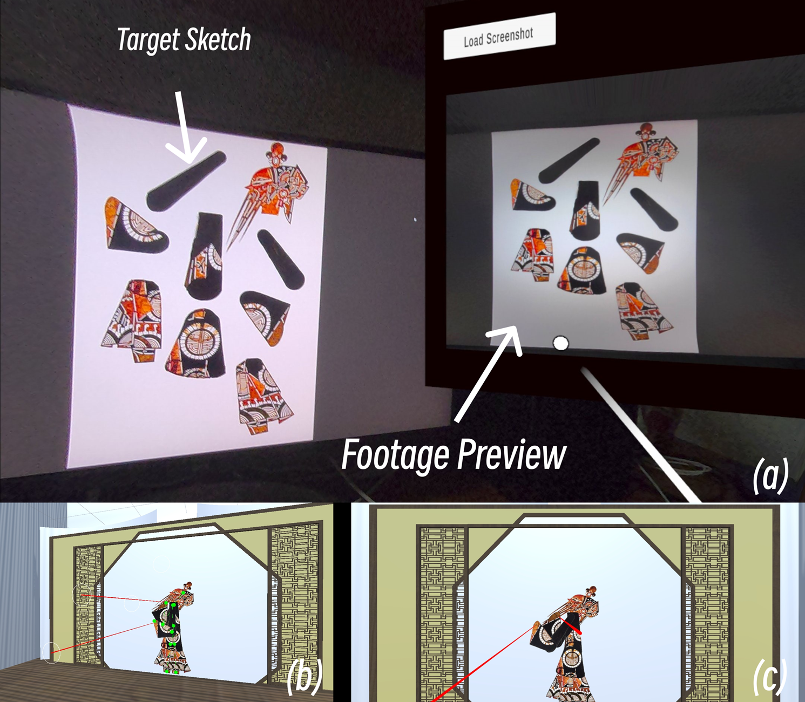

ShadowRehearsal: Enhancing Traditional Art Design Workflows with XR Technology
ShadowRehearsal：利用XR技术增强传统艺术设计工作流
First release at ISMAR 2024


Figure 1: ShadowRehearsal workflow demonstration
图1：ShadowRehearsal工作流演示
Abstract
摘要
Immersive systems have shown significant potential in enhancing creative design processes. While extensively applied in various fields, their integration into traditional art design workflows remains underexplored. This study attempts to address this gap by investigating how XR technology can be integrated into shadow puppetry, a traditional Chinese art form. We developed and tested a system called "ShadowRehearsal" among practitioners, demonstrating that XR technology can revolutionize traditional art workflows by significantly enhancing rapid prototyping and testing of design concepts. Our findings suggest that such integration fosters greater innovation and efficiency in traditional art practices, providing a framework for broader applications of XR technologies in preserving and innovating traditional arts.
沉浸式系统在增强创意设计过程中展现出显著潜力。虽然这些技术已广泛应用于各个领域，但它们在传统艺术设计工作流程中的整合仍然未被充分探索。本研究试图通过研究XR技术如何融入皮影戏这一中国传统艺术形式来弥补这一差距。我们开发并在从业者中测试了一个名为"ShadowRehearsal"的系统，证明XR技术可以通过显著增强设计概念的快速原型设计和测试，从而彻底改变传统艺术工作流程。我们的研究结果表明，这种整合促进了传统艺术实践中更大的创新和效率，为XR技术在保存和创新传统艺术方面的更广泛应用提供了框架。
Introduction
引言
Immersive systems have been increasingly recognized for their potential to enhance creative design processes. These technologies offer deep immersion, advanced simulation, and rich visual feedback, significantly benefiting design workflow and have been extensively applied in various fields. However, their application in traditional art design remains underexplored. Despite the frequent appearance of traditional arts as themes in XR research, there is a lack of focused research on integrating XR technology into traditional art workflows to support and enhance these creative practices.
沉浸式系统在增强创意设计过程中的潜力已得到越来越多的认可。这些技术提供深度沉浸感、先进的模拟能力和丰富的视觉反馈，显著有益于设计工作流程，并已广泛应用于各个领域。然而，它们在传统艺术设计中的应用仍未被充分探索。尽管传统艺术经常作为XR研究中的主题出现，但缺乏关于将XR技术整合到传统艺术工作流程中以支持和增强这些创意实践的专注研究。
This study aims to address this gap by exploring how XR technology can be integrated into traditional art workflows. Using shadow puppetry as an entry point, we investigated the current innovation challenges faced by this traditional art form and developed a new system called "ShadowRehearsal," which was tested among practitioners. This research seeks to demonstrate how immersive technologies can revolutionize workflows, particularly in the rapid prototyping and testing of design concepts, fostering greater innovation and efficiency in traditional art practices.
本研究旨在通过探索XR技术如何融入传统艺术工作流程来弥补这一差距。以皮影戏为切入点，我们调查了这一传统艺术形式面临的当前创新挑战，并开发了一个名为"ShadowRehearsal"的新系统，该系统在从业者中进行了测试。本研究旨在展示沉浸式技术如何彻底改变工作流程，特别是在设计概念的快速原型设计和测试方面，促进传统艺术实践中更大的创新和效率。
Related Work
相关工作
The potential of immersive systems to support creative design has long been recognized by the XR research community. Alahuhta highlights the significant potential of immersive environments in supporting creative work, focusing on aspects such as immersion, simulation capabilities, and rich visual information from the perspective of design collaboration. Similarly, Graessler and Taplick emphasize immersive systems' roles in industrial design, particularly as tools for prototyping and exploring design concepts, which significantly benefit the design workflow. Berni and Borgianni, Zaker and Coloma, and Yu, etc., have demonstrated how immersive technologies aid designers in creative realization across fields such as engineering, product design, and architecture. Their work showcases immersive systems' extensive use and exploration as excellent tools for visualizing expected outcomes and supporting design reflection. Currently, leveraging immersive technologies as tools for creative support is a key research direction in productivity applications.
沉浸式系统支持创意设计的潜力早已被XR研究社区所认可。Alahuhta强调了沉浸式环境在支持创意工作方面的显著潜力，从设计协作的角度关注沉浸感、模拟能力和丰富的视觉信息等方面。同样，Graessler和Taplick强调了沉浸式系统在工业设计中的作用，特别是作为原型设计和探索设计概念的工具，这显著有益于设计工作流程。Berni和Borgianni、Zaker和Coloma以及Yu等人已经证明了沉浸式技术如何在工程、产品设计和建筑等领域帮助设计师实现创意。他们的工作展示了沉浸式系统作为可视化预期结果和支持设计反思的优秀工具的广泛使用和探索。目前，将沉浸式技术作为创意支持工具是生产力应用研究的关键方向。
Despite advancements in these fields, there is relatively little research on applying immersive technology to traditional art design workflows. This gap does not stem from a lack of interest in traditional art within the immersive technology community. On the contrary, much research draws inspiration from traditional art, attempting to merge immersive technology with classic art forms to create new experiences. Examples include the virtual art installations by artists like Char Davies, Olafur Eliasson and Raya, etc., as well as tools like OpenBrush. These studies often use traditional art as a medium to showcase immersive technology's capabilities, rather than focusing on the specific art forms themselves. Consequently, research exploring how immersive systems can assist in the creation of traditional art is rare, making it an overlooked area despite its potential significance.
尽管这些领域取得了进展，但关于将沉浸式技术应用于传统艺术设计工作流程的研究相对较少。这一差距并非源于沉浸式技术社区对传统艺术缺乏兴趣。相反，许多研究从传统艺术中汲取灵感，试图将沉浸式技术与经典艺术形式融合，创造新的体验。例如，Char Davies、Olafur Eliasson和Raya等艺术家的虚拟艺术装置，以及像OpenBrush这样的工具。这些研究通常使用传统艺术作为展示沉浸式技术能力的媒介，而不是专注于特定的艺术形式本身。因此，探索沉浸式系统如何协助传统艺术创作的研究很少，使其成为一个被忽视的领域，尽管它具有潜在的重要性。
By focusing on the integration of XR technology into traditional art workflows, choosing shadow puppetry as a entry point, this study seeks to bridge this research gap.
通过专注于将XR技术整合到传统艺术工作流程中，选择皮影戏作为切入点，本研究旨在弥合这一研究差距。
Case Study: Shadow Puppetry (Pi Ying)
案例研究：皮影戏（皮影）
We chose shadow puppetry to explore how XR can assist traditional art workflows. We observed the design workflow of this cultural theme and conducted interviews with designers.
我们选择皮影戏来探索XR如何协助传统艺术工作流程。我们观察了这一文化主题的设计工作流程，并对设计师进行了访谈。
Shadow puppetry (Pi Ying) is a traditional Chinese art form where artists create and manipulate intricate, delicate leather puppets to perform narratives based on complex choreography. During the creation process, artists often need to produce multiple puppets based on the same artistic design for stage effect testing and action choreography. The complexity of the production process and the fragility of the puppets significantly increase creative costs, reducing the artists' inclination to explore new stage effects and narratives.
皮影戏是一种传统的中国艺术形式，艺术家创造并操纵复杂、精致的皮革木偶，根据复杂的编排表演叙事。在创作过程中，艺术家通常需要根据相同的艺术设计制作多个木偶，用于舞台效果测试和动作编排。制作过程的复杂性和木偶的脆弱性显著增加了创作成本，降低了艺术家探索新舞台效果和叙事的倾向。
Starting from the core challenges of embedded theme, we aimed to create a tool that helps artists in rapid-prototyping and testing, thereby reducing the time and labor costs of design realization and exploration. We developed a workflow system for design reflection and iteration called "ShadowRehearsal" using Unity and Quest 3, introducing two levels of immersion to investigate their impact on the designer.
从嵌入式主题的核心挑战出发，我们旨在创建一个帮助艺术家进行快速原型设计和测试的工具，从而减少设计实现和探索的时间和劳动成本。我们使用Unity和Quest 3开发了一个名为"ShadowRehearsal"的设计反思和迭代工作流系统，引入了两个沉浸级别来研究它们对设计师的影响。
After completing puppet figures designs on paper, the designer uses the HMD's camera to capture the sketch within the user's field of view in an augmented reality environment. The image is then sent to the image processor, which uses OpenCV for basic sharpening and matting, followed by animation rigging and control mapping. The processed image is applied to an interactive virtual stage with a puppet control simulation system inspired by He, allowing the designer to choreograph shadow puppet's movements and preview stage effects. Overall workflow is illustrated in Fig. 1.
在纸上完成木偶人物设计后，设计师使用HMD的摄像头在增强现实环境中捕捉用户视野内的草图。然后，图像被发送到图像处理器，该处理器使用OpenCV进行基本的锐化和抠图，随后进行动画绑定和控制映射。处理后的图像应用于具有受He启发的木偶控制模拟系统的交互式虚拟舞台，允许设计师编排皮影木偶的动作并预览舞台效果。整体工作流程如图1所示。

Figure 2: (a) Image capture: user aims the headset at the sketch, and a preview image is displayed after recording; (b) Image processing: joints are bound and marked with green dots; (c) Manipulation simulation demonstration from the user's perspective.
图2：(a) 图像捕获：用户将头戴式显示器对准草图，记录后显示预览图像；(b) 图像处理：关节被绑定并标记为绿色点；(c) 从用户视角展示操作模拟。
Testing
测试
In the preliminary experiment, seven shadow puppetry artists were invited to participate. They were asked to complete a full workflow of shadow puppet design and performance practice, with the entire process recorded. During the process, the artists explained their current design stage and tasks to the researchers.
在初步实验中，我们邀请了七位皮影戏艺术家参与。他们被要求完成皮影木偶设计和表演实践的完整工作流程，整个过程被记录下来。在此过程中，艺术家们向研究人员解释了他们当前的设计阶段和任务。
They were then used the ShadowRehearsal system to assist in their design work as comparation. They needed to design a simple shadow puppet figure, scan the design, and convert it into an interactive model, finally completing the stage effect testing for the designed puppet. (see Fig. 2)
随后，他们使用ShadowRehearsal系统作为比较来辅助他们的设计工作。他们需要设计一个简单的皮影木偶形象，扫描设计，并将其转换为交互式模型，最终完成对设计木偶的舞台效果测试。（见图2）
The experiment assessed the impact and effectiveness of the XR system by observing how the new system helped designers perform similar tasks in the traditional workflow using new methods and conducting interviews regarding creative experience. The aim was to compare task allocation, efficiency, and user experience between the two workflows, providing unique insights.
实验通过观察新系统如何帮助设计师使用新方法执行传统工作流程中的类似任务，并就创意体验进行访谈，评估了XR系统的影响和有效性。目的是比较两种工作流程之间的任务分配、效率和用户体验，提供独特的见解。
Preliminary Result and Conclusion
初步结果和结论
The workflow comparison and interview results from the preliminary user experience practice revealed several key findings:
初步用户体验实践的工作流程比较和访谈结果揭示了几个关键发现：
Future work will enhance image capture to preserve more details, implement flexible joint detection methods, increase processing speed and providing designers with more freedom, offering convenient design iteration methods for real-time adjustments.
未来的工作将增强图像捕获以保留更多细节，实现灵活的关节检测方法，提高处理速度并为设计师提供更多自由度，提供便捷的设计迭代方法以进行实时调整。

Poster
Ref.
- P. Alahuhta, E. Nordb, A. Sivunen, and T. Surakka. Fostering team creativity in virtual worlds. Journal For Virtual Worlds Research, 7(3), 2014.
- A. Berni and Y. Borgianni. Applications of Virtual Reality in Engineering and Product Design: Why, What, How, When and Where. Electronics, 9(7):1064, 2020. doi: 10.3390/electronics9071064.
- C. Davies. Osmose & Ephemere. 1995. [Online]. Available: https://www.immersence.com/osmose/index.php.
- O. Eliasson. Your View Matter. 2021. [Online]. Available: https://www.yourviewmatter.art/.
- I. Graessler and P. Taplick, “Supporting Creativity with Virtual Reality Technology,” Proceedings of the Design Society: International Conference on Engineering Design, vol. 1, no. 1, pp. 2011–2020, 2019. doi:10.1017/dsi.2019.207
- Y. He. ShadowPlayVR: Understanding Traditional Shadow Puppetry Performance Techniques Through Non-Intuitive Embodied Interactions. Proc. VRST, 2023. Association for Computing Machinery, New York, NY, USA, 2023. doi: 10.1145/3611659.3617226.
- OpenBrush Team. OpenBrush, 2023. [Online]. Available: https://www.openbrush.org/.
- L. Raya, J. J. García-Rueda, D. López-Fernández, and J. Mayor. Virtual reality application for fostering interest in art. IEEE Computer Graphics and Applications, 41(2):106-113, 2021. doi: 10.1109/MCG.2021.3055685.
- R. Yu, N. Gu, G. Lee, and A. Khan. A Systematic Review of Architectural Design Collaboration in Immersive Virtual Environments. Designs, 6(5):93, 2022. doi: 10.3390/designs6050093.
- [10] R. Zaker and E. Coloma. Virtual reality-integrated workflow in BIM-enabled projects collaboration and design review: a case study. Visual, 6(4), 2018. doi: 10.1186/s40327-018-0065-6.